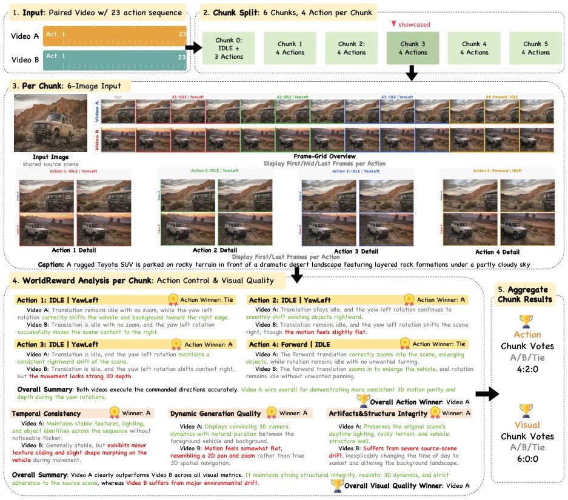
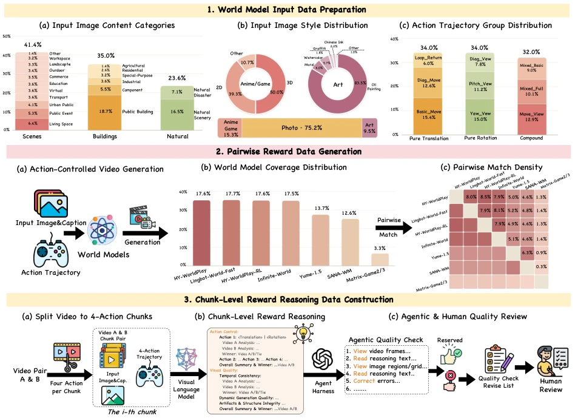
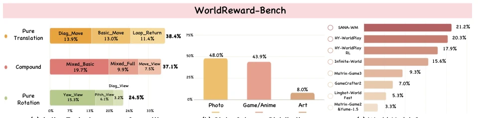
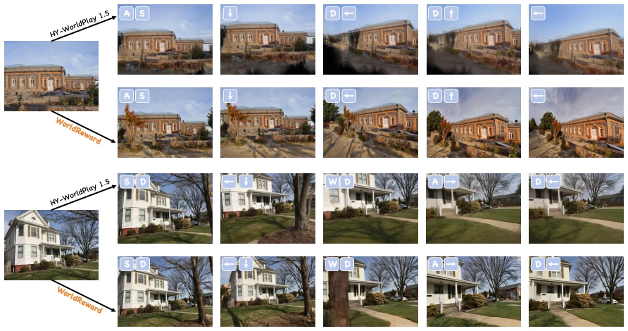
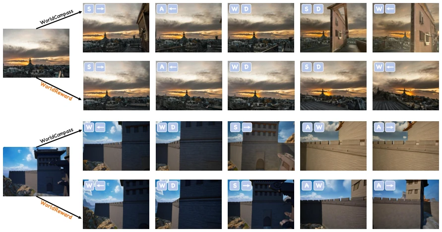
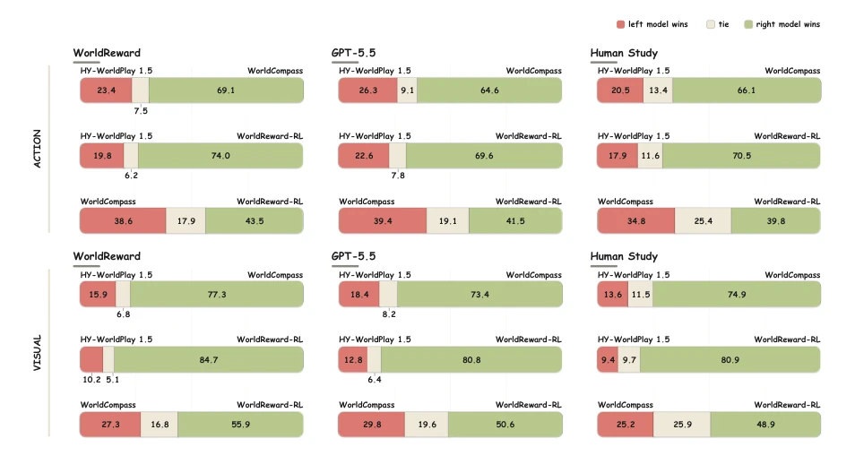

This paper finds a "referee" for the world model of camera control, but the referee itself must also guard against "motion sickness". WorldReward uses a VLM as a reward model; the core strategy is to cut long videos into chunks, where each chunk focuses only on a few actions, avoiding the VLM being drowned by long contexts. Although claiming to unify action consistency and visual quality, essentially it still relies on distilling data from large models (Gemini/GPT), with human annotation serving only as final polishing. Experimentally it is indeed stronger than GPT-5.5, but this might just be because it understands "how to be evaluated" better, rather than truly understanding physics. For RL fine-tuning, it indeed makes HY-WorldPlay more stable, but the computational cost is estimated to be not low. In short, it is a practical engineering improvement, but theoretical breakthroughs are limited, belonging to reward engineering that "changes the soup but not the medicine", winning in engineering implementation, solving the problem of difficult long video evaluation.
Camera-controlled world models require reward signals to optimize action execution and visual quality. Existing methods either only look at geometric trajectories (e.g., DepthAnything3 [11]), ignoring visual details; or only look at image quality (e.g., HPSv3 [13]), ignoring action execution. WorldCompass [10] although combines both, the system is heterogeneous, unable to unify reasoning. Directly inputting long videos into VLM leads to local action evidence being diluted, making attribution difficult. Furthermore, actions and visual changes are coupled; the same visual change has different meanings under different actions. Therefore, a reward model is needed that can associate actions with visual results and locate local evidence, to solve the difficulties of action attribution and visual consistency evaluation under long horizons, avoid the separation of geometric and visual evaluation, and ensure generated videos both comply with instructions and are visually coherent.
The overall process includes data construction and model training. Regarding data, paired videos are generated through multi-world models, utilizing Gemini 3.1 Pro for distillation reasoning, followed by GPT-5.5 agent audit and human calibration. Regarding models, WorldReward adopts a chunk-level strategy, dividing videos by actions into groups of 4 actions, input containing source image, frame grid, and action panel. VLM performs action control and visual quality reasoning on each chunk, finally aggregated into global preference through voting. Training adopts SFT, RL stage uses DiffusionNFT framework, normalizing action and visual rewards separately before combining for optimization. Specifically, each chunk input consists of source image, frame grid overview, and four action-level panels, ensuring VLM can check instruction direction and temporal consistency for each action. Voting mechanism prevents single strong/weak fragments from dominating video-level preference. This local-to-global scheme effectively solves the noise dilution problem in long video evaluation, making reward signals guide RL fine-tuning more precisely.

Figure 1 Chunk-level reward reasoning in WorldReward. A paired video is split into action-aligned chunks. Each chunk is judged from a six-image input (source image, frame-grid overview, and four action-level panels), yielding action and visual-quality winners in {𝐴, 𝐵, Tie} that are aggregated by voting into video-level preferences.

Figure 2 Reasoning-augmented preference-data pipeline. (1) Input preparation over image content, style, and trajectory groups. (2) Pairwise generation from eight world-model variants, with per-model coverage and pair-assignment density. (3) Chunk-level reasoning annotation by a VLM, followed by agent auditing and human review.
Construct WorldReward-Bench, 760 pairs of videos, covering different trajectories and styles. Baselines include GPT-5.5, Gemini 3.1 Pro, HPSv3, etc. Metric is human preference consistency (accuracy). WorldReward surpasses baselines in action, appearance, and motion quality, exceeding by 3.42%, 1.45%, 3.56% respectively. After RL fine-tuning HY-WorldPlay 1.5, short and long horizons both improve. Ablation experiments prove chunking and structured input are effective. Dataset contains 50,000 pairs of videos, 100,000 training chunks. Benchmark is independent of the training set, testing generalization. Results show WorldReward performs best on human annotation benchmarks, and the model after RL shows significant improvement in action execution and visual quality, verifying the effectiveness of the reward model.

Figure 3 Composition of WorldReward-Bench. (a) Trajectory groups, (b) visual styles, and (c) source world models of the 760 video pairs.

Figure 4 Qualitative comparison with HY-WorldPlay 1.5 [9]. Top: HY-WorldPlay 1.5; bottom: WorldReward-RL (labeled WorldReward). Icons mark the translation key and rotation direction active at each frame.

Figure 5 Qualitative comparison with WorldCompass [10]. Top: WorldCompass; bottom: WorldReward-RL (labeled WorldReward). Layout as in Figure 4.

Figure 6 Pairwise evaluation of post-trained world models. Left-win / tie / right-win rates (%) judged by WorldReward, GPT-5.5 [23], and human annotators for action consistency (top) and visual quality (bottom) on the 200 human-study pairs. WorldReward-RL denotes HY-WorldPlay 1.5 post-trained with WorldReward.